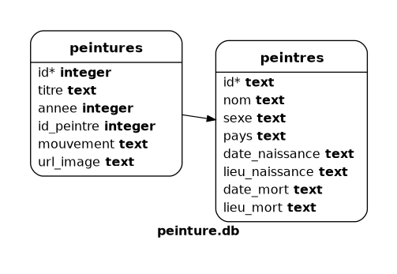

Programme Officiel
Contenus
|
Capacités attendues
|
Commentaires
|
|---|---|---|
| Langage SQL : requêtes d’interrogation et de mise à jour d’une base de données. | Identifier les composants d’une requête. Construire des requêtes d’interrogation à l’aide des clauses du langage SQL : Construire des requêtes d’insertion et de mise à jour à l’aide de : |
On peut utiliser DISTINCT, ORDER BY ou les fonctions d’agrégation sans utiliser les clauses GROUP BY et HAVING. |
Maintenant que nous avons vu comment étaient organisées les bases de données, et comment elles étaient maintenues conformes, nous allons interagir avec elles en utilisant le langage
SQL(Structured Query Language) pour interroger ou écrire dans une base de données.
Dans ce cours, nous allons utiliser le SGBD sqlite3 qui permet de stocker des petites bases de données dans des fichiers.
Il existe de nombreuses façons d’écrire des requêtes SQL avec une base de données sqlite:
- En interface graphique avec sqlitebrowser,
- En console, en lançant:
sqlite3 nom_de_ma_bdd.db. - Dans le navigateur grâce à
sql.jsvoir https://apps.lyceum.fr/sqlite par exemple. - Via un langage de programmation comme Python grâce au module
sqlite3
Pour illustrer ce cours, nous allons étudier des données situées dans la base de données peinture de la page https://apps.lyceum.fr/sqlite.
Le langage SQL
Les instructions SQL s’écrivent d’une manière qui ressemble à celle de phrases ordinaires en anglais. C’est un langage déclaratif, c’est-à-dire qu’il permet de décrire le résultat escompté, sans décrire la manière de l’obtenir.
Le langage SQL n’est pas sensible à la casse, mais a l’habitude d’écrire les instructions en majuscules, on peut écrire les instructions sur plusieurs lignes avec ou sans indentation et chaque instruction doit être terminée par un point-virgule.
Nous verrons cette année les instructions de manipulation du contenu de la base de données qui commencent par les mots clés:
SELECT: recherche de contenu;UPDATE: modification,INSERT: ajout,DELETEsuppression.
Étudions dans la console les tables contenues dans la base de données peintures.
Dont le schéma est le suivant:

Ouvrir la page https://apps.lyceum.fr/sqlite puis sélectionner la base de données peinture.
Maintenant dans l’éditeur sql, on peut interagir avec la bdd, par exemple en affichant tous les peintres de la table peintres.
SELECT peintre FROM peintres;
Pour exécuter une commande sql, vous pouvez utiliser CTRL+Entrée.
Construire des requêtes d’interrogation
Pour afficher tous les enregistrements d’une table on utilise:
SELECT * FROM tablename;
On va commencer par afficher toutes les entrées de:
- La table
peintres:SELECT * FROM peintres;, - puis
peintures:SELECT * FROM peintures;.
On peut limiter le nombre de lignes affichées avec LIMIT, par exemple pour n’afficher que trois enregistrements de la sélection: SELECT * FROM peintres LIMIT 3;,
Choisir les colonnes à afficher avec SELECT
SELECT col1, col2 FROM tablename;
On va récupérer le nom et le sexe du peintre:
SELECT nom, sexe FROM peintres;
Restreindre les lignes avec WHERE
On sélectionne les tableaux peints en 1503.
SELECT * FROM peintures WHERE annee="1503";
Jointure de deux tables avec JOIN
Dans cette base de données, les informations sur les peintres et sur les peintures ont été séparées, ce qui est bien pour éviter la redondance et les risques d’anomalies.
La jointure permet d’utiliser les clés secondaires pour aller rechercher les données d’une autre table grâce à la clé étrangère.
SELECT colonne1, colonne2 FROM table1
JOIN table2 ON table1.attribut = table2.attribut
Par exemple, la requête: SELECT * FROM peintures WHERE titre="La Joconde";
renvoie:
12418|La Joconde|1503|762|Haute Renaissance|http://commons.wikimedia.org/wiki/Special:FilePath/Mona%20Lisa%2C%20by%20Leonardo%20da%20Vinci%2C%20from%20C2RMF%20retouched.jpg
Ainsi le peintre est identifié par son id 762, c’est bien pour la base de données, mais pas pour l’utilisateur qui veut connaitre le nom du peintre.
Il va falloir aller chercher cette information dans la deuxième table: peintres et faire une jointure pour afficher toutes les informations souhaitées.
SELECT titre, annee, peintre, pays, date_naissance, date_mort FROM peintures
JOIN peintres ON peintures.id_peintre=peintres.id WHERE titre="La Joconde";
Qui renvoie:
La Joconde | 1503 | Léonard de Vinci | République florentine | 1452-04-24T00:00:00Z | 1519-05-12T00:00:00Z
Comme vous le voyez il est possible ou nécessaire de préciser d’où vient la colonne sélectionnée avec une notation pointée comme: peintures.id de la forme nom_de_la_table.nom_de_la_colonne
Les clauses DISTINCT ORDER BY et GROUP BY
Voici deux instructions supplémentaires qui peuvent être utiles:
DISTINCT: Ne pas renvoyer les doublons.SELECT DISTINCT ma_colonne FROM nom_du_tableau;
De nombreux peintres proviennent du même pays. Ainsi la requête suivante va renvoyer des doublons.
SELECT pays FROM peintres;
On ajoute
DISTINCTpour n’afficher que des valeurs distinctes.SELECT DISTINCT pays FROM peintres;
Cette requête sélectionne le champ ma_colonne de la table nom_du_tableau en évitant de retourner des doublons.
ORDER BY: Permet d’ordonner les résultats selon la colonne de votre choix.SELECT colonne1, colonne2 FROM table ORDER BY colonne1 [ASC|DESC];
Cette requête sélectionne les champs
colonne1etcolonne2de la tabletableet classe la sélection par ordre croissant sur lacolonne1.On classe les tableaux par date croissante.
SELECT titre, annee FROM peintures ORDER BY annee;
On ajoute
DISTINCTpour n’afficher que des valeurs distinctes.SELECT DISTINCT pays FROM peintres;
GROUP BY: grouper plusieurs résultats et utiliser une fonction d’agrégation (SUM,AVG,COUNT,MAX,MIN) sur un groupe de résultat.SELECT colonne1, colonne2 FROM table GROUP BY colonne1;
On regroupe les peintres par pays en comptant le nombre de peintres par pays.
SELECT pays, COUNT(pays) FROM peintres GROUP BY pays ORDER BY COUNT(pays) DESC;
Construire des requêtes d’insertion et de mise à jour
Ajouter des entrées avec INSERT
Grâce au SQL, nous pouvons aussi ajouter des informations dans une table avec la commande INSERT INTO. Pour ce faire, il faut indiquer la table dans laquelle on souhaite intégrer une ligne ainsi que la liste des champs pour lesquels on spécifie une valeur, et enfin la liste des valeurs correspondantes.
INSERT INTO table1 VALUES
(val1, val2 ..., valN)
Ajout d’un tableau La Joconde 2.
INSERT INTO peintures VALUES
(124181, "La Joconde 2 Le retour", 1504, 762, "Haute Renaissance", NULL);
Mettre à jour des informations avec UPDATE
On peut modifier certains champs d’enregistrements existants grâce au mot-clé UPDATE : cette instruction permet de mettre à jour plusieurs champs de plusieurs enregistrements d’une table, à partir des expressions qui lui sont fournies.
UPDATE table1 SET col1=val1
WHERE coli="valeur";
Mise à jour de la Joconde 2.
UPDATE peintures SET annee=1505 WHERE id=124181;
On peut vérifier la mise à jour avec: SELECT * FROM peintures WHERE id=124181;
Supprimer des entrées avec DELETE
Il se peut que l’on soit amené à supprimer un ou plusieurs enregistrements d’une table, il existe pour cela l’instruction DELETE FROM.
DELETE FROM table1
WHERE coli="valeur";
On va supprimer la Joconde 2.
DELETE FROM peintures WHERE id=124181;
On peut vérifier la suppression avec: SELECT * FROM peintures WHERE id=124181;